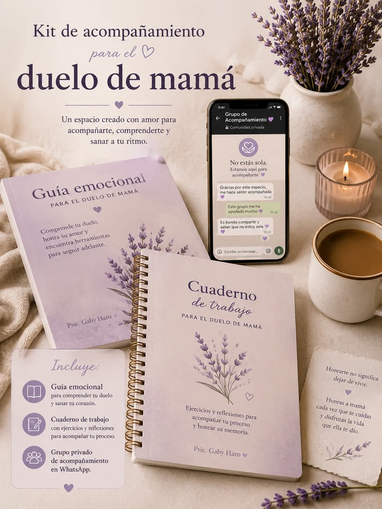

Una guía creada para ayudarte a comprender mejor tu proceso, validar lo que sientes y transitar el duelo con mayor claridad y compasión.
En ella encontrarás:
Este cuaderno es una de las partes más importantes del acompañamiento, porque te ayudará a poner en palabras lo que estás viviendo y a procesarlo poco a poco.
Incluye ejercicios para trabajar:
Realizar estos ejercicios es una parte fundamental para elaborar el duelo.
A través de la escritura podrás ir procesando tus emociones, ordenando tus recuerdos y comprendiendo con mayor claridad lo que estás sintiendo.
Un espacio privado y respetuoso en el que podrás sentirte acompañada por otras personas que también han perdido a su mamá y están atravesando un proceso similar al tuyo.
Dentro del grupo encontrarás:
Todo esto por:
Precio normal: $30 USD
$9 USD
Precio especial de lanzamiento
Pago único.
Incluye la guía emocional, el cuaderno de ejercicios y el acceso al grupo privado de acompañamiento.
Tu duelo no necesita prisa.
Necesita espacio, comprensión y acompañamiento.
Soy la psicoterapeuta Gabriela Haro, con más de 15 años de experiencia en el campo de la psicoterapia y el acompañamiento emocional.
Me he especializado principalmente en tanatología y acompañamiento en procesos de pérdida y duelo, así como en heridas de la infancia, terapia familiar, liberación emocional y sanación energética. Esta preparación me permite brindar un acompañamiento integral, sensible y respetuoso, de acuerdo con las necesidades de cada persona.
Mi propósito es ofrecer herramientas que ayuden a las personas a comprender lo que están viviendo, procesar sus emociones y encontrar recursos internos para afrontar sus procesos de una manera más saludable. Quienes han trabajado conmigo han logrado experimentar cambios positivos, mejoría emocional y una mayor comprensión y conocimiento de sí mismas y de sus propios procesos.